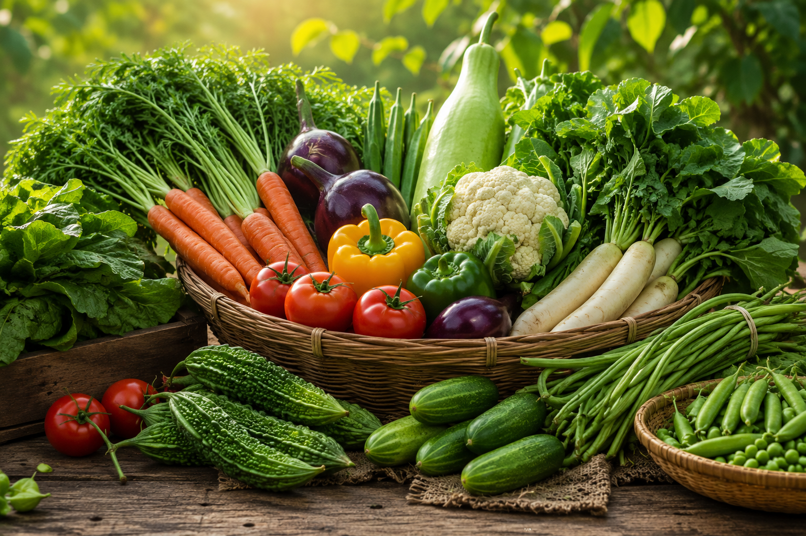
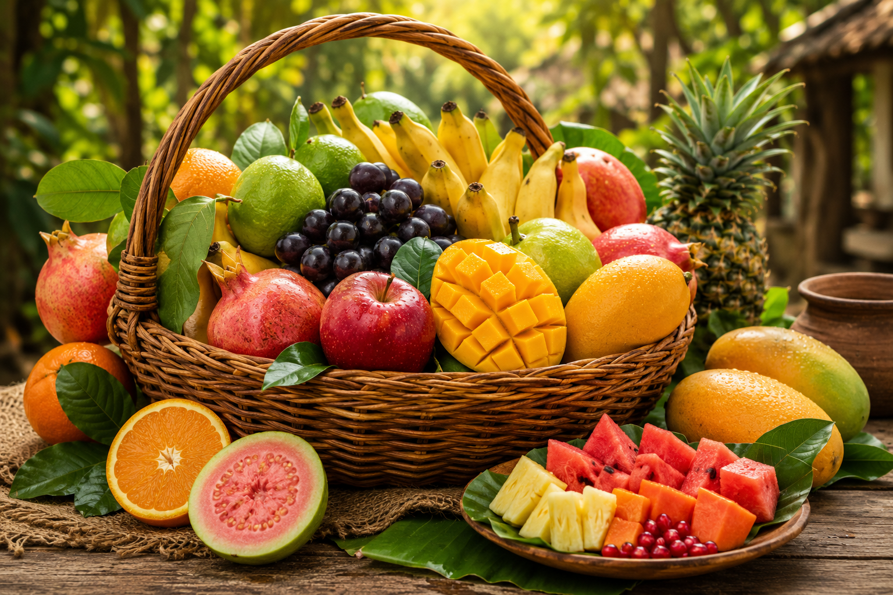
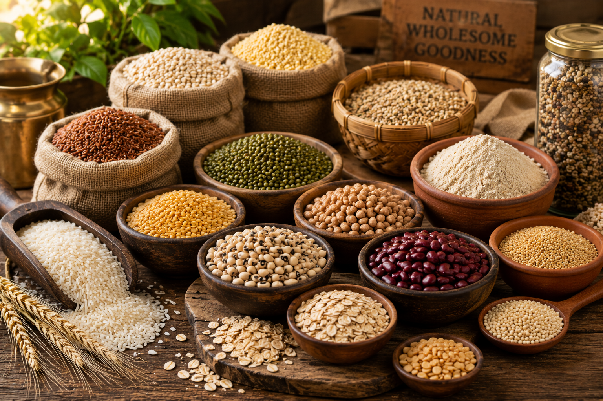

Annam Parabrahma Aaharam was born from a simple concern — the growing distance between people and the food they consume every day.
In today's world, many families are becoming increasingly conscious of their health and wellbeing. At the same time, questions around food quality, farming practices and long-term sustainability continue to grow.
We often ask ourselves a simple question:
"If food is meant to nourish life, should it not be chosen with greater care?"
This question became the inspiration behind Annam Parabrahma Aaharam.
We believe that healthy families, empowered farmers and a healthier planet begin with better food choices.
Our journey is not merely about offering products.
It is about nurturing trust, supporting positive change and contributing to a healthier future for generations to come.
Food should not merely fill our plates — it should nourish our lives.
The Meaning Behind Annam Parabrahma Aaharam
"Annam Parabrahma Swaroopam" — Food is sacred.
This simple belief reminds us that food is far more than something we consume every day. It is what nourishes us, brings families together and supports life itself.
Behind every meal is the gift of nature, the effort of farmers and the wisdom passed down through generations.
The name Annam Parabrahma Aaharam reflects our belief that food deserves care, gratitude and respect.
It reminds us to think about where our food comes from, how it is grown and the impact it has on our health, our farmers, our communities and our environment.
We believe food choices become more meaningful when we understand the connection between nature, farmers and families.
At its heart, Annam Parabrahma Aaharam is about encouraging better food choices and creating greater awareness about the relationship between food, health and nature.
For us, food is not merely a product.
It is nourishment.
It is responsibility.
It is gratitude.
It is life.
Because food should not merely fill our plates — it should nourish our lives.
Our Philosophy
Food is one of the few things that connects every living being.
It connects nature to farmers, farmers to families and families to future generations.
Yet somewhere along the way, many of us have become disconnected from the journey of our food — how it is grown, where it comes from and the impact it has on our health, our communities and our environment.
At Annam Parabrahma Aaharam, we believe food deserves greater thought, greater care and greater respect.
We support natural and organic farming practices because they encourage a closer relationship with nature and a more sustainable way of growing food. We also recognise that such farming often requires greater effort and can many times result in comparatively lower yields than conventional farming practices. As a result, the effort, care and responsibility involved in growing food are not always reflected by its price alone.
For us, choosing better food is not about perfection.
It is about making conscious choices.
Choices that support healthier families.
Choices that encourage responsible farming.
Choices that contribute to a healthier planet.
We do not believe in unrealistic promises.
We believe in honesty.
We believe in responsibility.
We believe that every better choice matters.
Every meal is an opportunity to make a better choice — for ourselves, for our farmers and for the world we leave behind.
Healthy families, empowered farmers and a healthier planet begin with better food choices.
Our Vision
To contribute to a future where families eat better, farmers thrive, communities flourish and nature is respected for generations to come.
Healthy families. Empowered farmers.
Thriving communities. A healthier planet.
Our Mission
Our mission is to make better food choices more accessible to families and communities while supporting farmers who are committed to responsible and sustainable farming practices.
Through thoughtfully sourced vegetables, fruits, groceries and traditional foods, we aim to encourage greater awareness about the connection between food, health and nature.
Guided by the values of purity, tradition and devotion, we strive to build trust through honesty, transparency and responsibility, making every offering a step towards a healthier and more sustainable future.
Creating awareness. Supporting farmers. Nourishing families and communities.
Our Values
Purity
We strive to offer products that reflect care, quality and authenticity.
Tradition
We respect the wisdom and practices that have nourished generations before us.
Devotion
We serve every family and community with sincerity, responsibility and care.
Integrity
We believe trust is built through honesty, transparency and doing what is right.
Sustainability
We support choices and practices that contribute to a healthier future for people, farmers and nature.
Community
We believe positive change happens when families, farmers and communities grow together.
Purity in what we offer. Integrity in how we serve.
Our Offerings
Every category we build reflects our belief that better food choices can create a positive impact on families, farmers, communities and the environment.
Rather than growing quickly, we believe in growing thoughtfully. As we continue our journey, we are carefully developing product categories that align with our values and our vision for healthier families, stronger farming communities and a healthier planet.
Categories We Are Building

🥬 Vegetables
Fresh produce sourced with care to support healthier families and communities.

🥭 Fruits
Seasonal fruits selected with a focus on quality, freshness and responsible sourcing.

🌾 Natural Groceries
Everyday essentials inspired by simplicity, tradition and conscious living.
Foods rooted in culture, tradition and generations of wisdom.
Building thoughtfully today for a healthier tomorrow.
Why Choose Annam Parabrahma Aaharam
Because Food Deserves More Than Convenience
🌿 Thoughtfully Sourced
Food should be chosen with thought, care and responsibility.
👨🌾 Farmer Focused
We support responsible farming while recognising the realities farmers face every day.
🤝 Trust & Transparency
We value honesty, informed choices and transparency over marketing claims.
🌍 Sustainability
Healthy families, empowered farmers and a healthier planet are deeply connected.
🙏 Purpose Driven
Our goal is to build trust between nature, farmers and families for generations to come.
We value honesty over unrealistic promises.
We support natural and organic farming practices while recognising the realities and challenges farmers face every day.
We believe informed choices are better than marketing claims.
Healthy families, empowered farmers and a healthier planet are deeply connected.
At the heart of everything we do is a simple goal — to build trust between nature, farmers and families.
We hope to encourage awareness, inspire better choices and contribute to a healthier future for all.
We are not simply offering products. We are encouraging better choices and meaningful change.
Building trust between nature, farmers and families.
Let's Grow Together
Every meaningful change begins with awareness, grows through conscious choices and flourishes when people come together with a shared purpose.
Whether you are looking to learn more about our journey, share your thoughts, explore our offerings or simply connect with us, we would be delighted to hear from you.
The journey towards healthier families, empowered farmers, thriving communities and a healthier planet belongs to all of us.